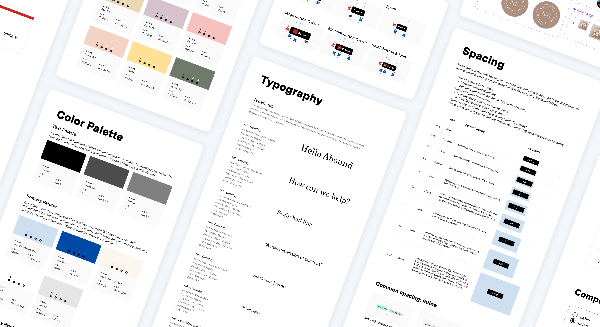
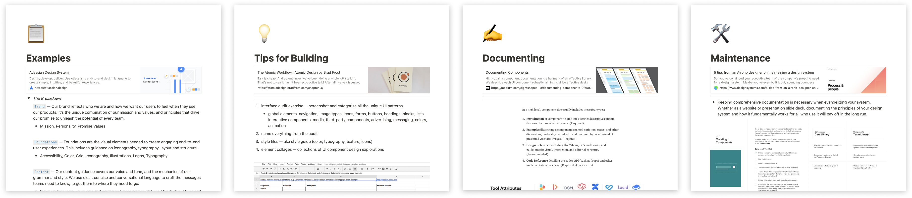
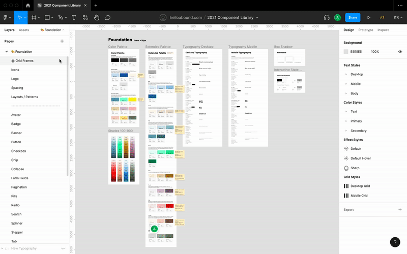
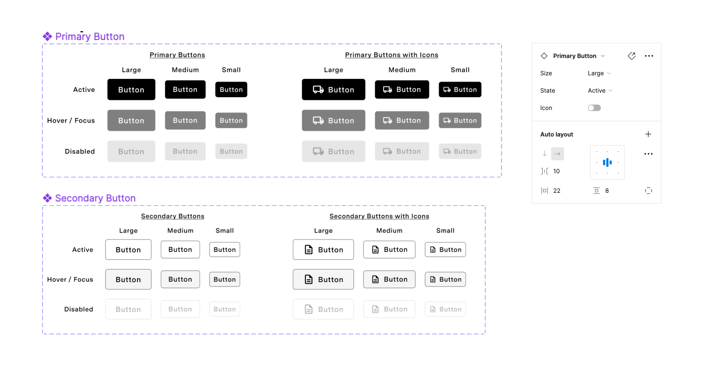
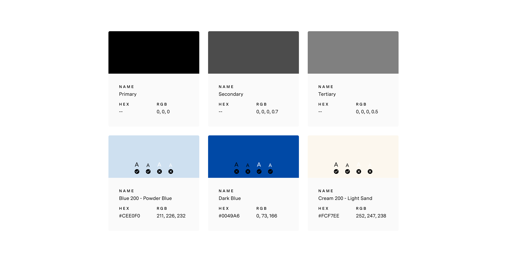
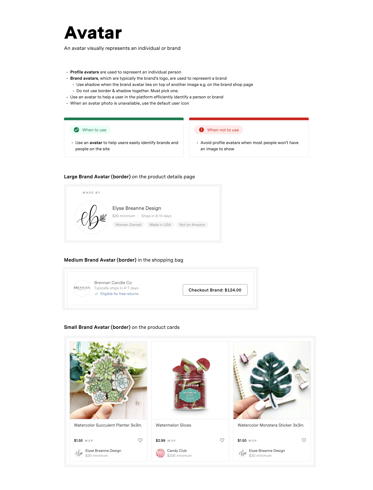

Design System
Library of components in Figma
Product designer
Figma
2 months

Background
When I first joined Abound, they had a barebone foundation for a design system consisting of typography, colors, and a few components. However, they had no actual documentation of this design system to act as a source-of-truth & facilitate knowledge sharing across the company.
To allow the design team to continue working fast & maintain consistency as our company grew, I was tasked with building our design system! Some of my goals were:
- Document all component variations
- Provide usage guidelines for each component
- Improve accessibility of existing components as needed
Building the design system
Research
I had never created a design system before, so I started this project with some research:
- I explored various companies' design systems, such as Atlassian's design system, IBM's Carbon, and Google's Material Design
- I read articles and blog posts about how companies, such as Instacart and Airbnb, built & maintain their design systems
- As suggested by my manager, I looked at the atomic design principles that Brad Frost outlines

Documented my research in Notion
Plan of Attack
After my internet research, I had my plan for creating the design system:
- Interface audit (screenshot and categorize all the unique UI patterns)
- Share findings with design team (discuss any inconsistencies and areas for redesign if needed)
- Build components & all their variants in Figma
- Write usage guidlines for each component
- Share new design system with product, design & engineering
Interface Audit
I went through our site & screenshotted all the components and patterns we were utilizing. When I shared this audit with the design team, I brought up inconsistencies we should mend & discussed component use cases and how we might consolidate the number of stylings/variations we were using (because we were using a lot 👀)

The Component Library
Based on my initial exploration of other design systems, I decided to put each component on a separate page in Figma. This organization makes it easy for other designers to find the components they need & reduces clutter on pages.

Variable Components
The bulk of my time for this project went to making the actual components in Figma. I created 25 components ranging from simple ones, such as avatars, buttons, and pills, to more complex ones like cards and modals. And for each component, I included all their variations (size, shadow, state, etc.) I also utilized auto layout whenever I could so they'd be as responsive as possible to make it easier for the design team when creating mockups.

Accessbility
A big priority for me when building this design system was accessibility. I wanted to make sure that each element in our design system considered all of our users. So designing with close attention to WCAG standards, I was able to build components that were highly accessible & maintained Abound's branding.

Usage Guidelines
For each component, I included a definition, types, styles, when to use & when not to use, and screenshot examples for desktop and mobile.

Reflection
- Being able to pull components from this library helped the design team build high fidelity mockups with quickness and ease. It also helped us maintain consistency across the site and minimize the amount of one-off stylings being used.
- My initial exploration showed me that all design systems are different! There isn't one master list of components that everyone needs or specific number of stylings you should have—they're all built and organized in a way to fit the company's needs. And I feel like I was able to do just that with ours :)